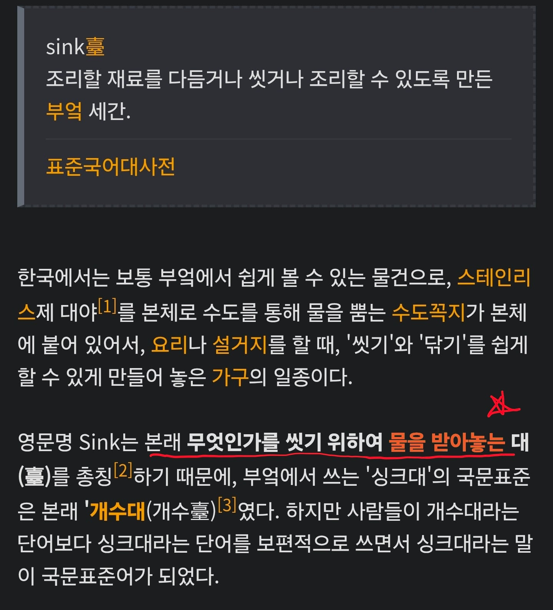
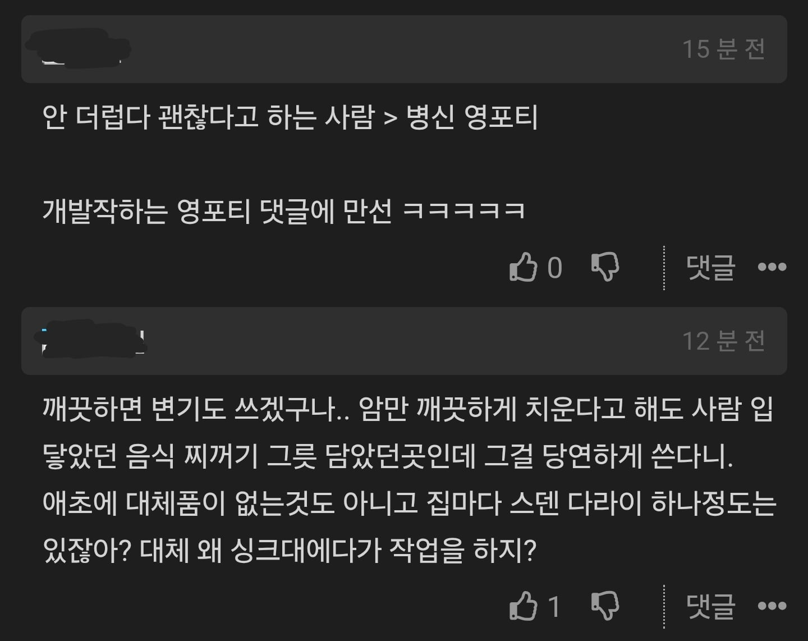
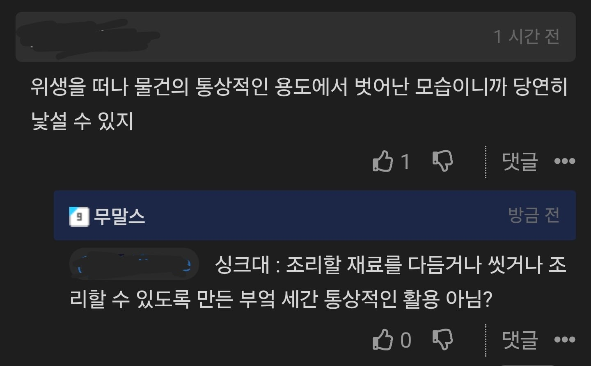
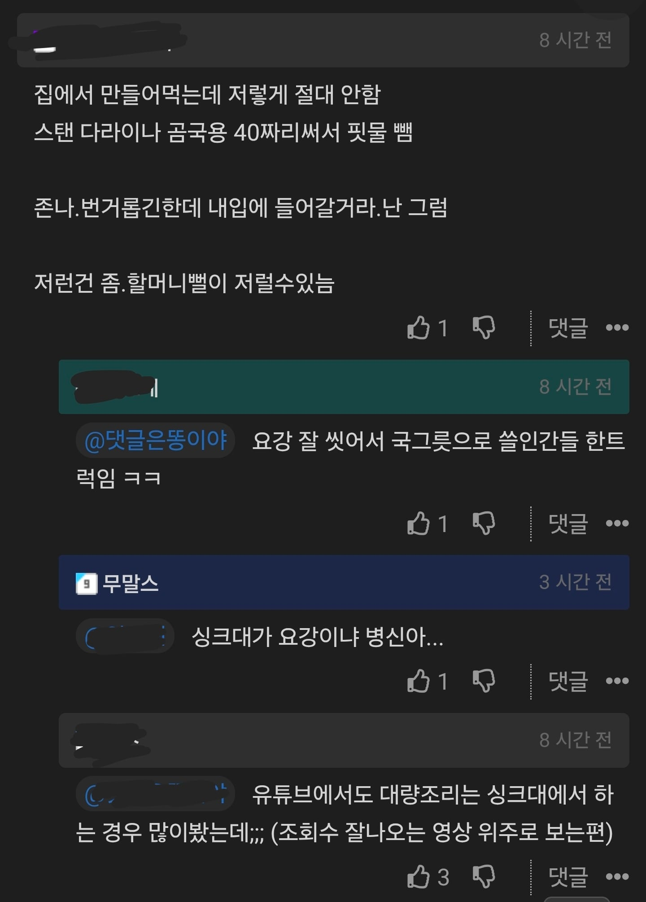
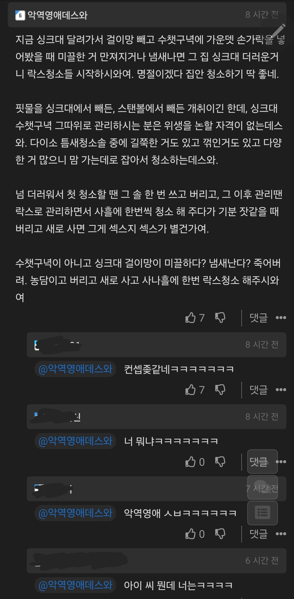

원글 : https://www.dogdrip.net/726347997?comment_srl=726418227#comment_726418227
다들 싱크대 관리는 어떻게 하길레 싱크대가 위생적이지 않다 더럽다 하는거임?
스댕 다라이는 괜찮고 스댕 싱크는 안괜찮고
온갇 음식물 올라간 그릇이나 도마는 어떻게 쓰는거임 그리고 그걸 설거지 한곳인데 똑같이 안씻어?
그냥 좀 그렇다~ 수준이면 몰라
더럽다 통상적이지 않다에 변기물 요강 비유는 뭔 병신비유야




+ 싱크대 청소 꿀팁

싱크대 보통 더럽긴한데 저런거 할때 락스질 함 하고 하지